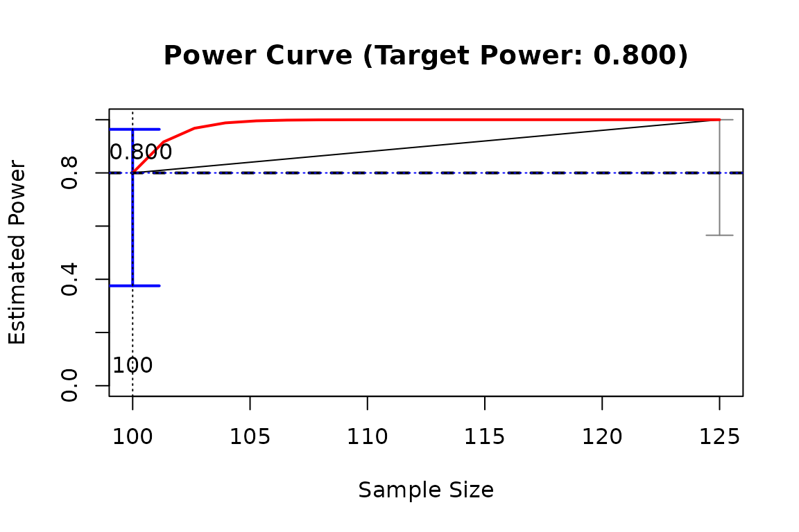

It searches by simulation the sample size (given other factors, such as effect sizes) or effect size (given other factors, such as sample size) with power to detect an effect close to a target value.
Usage
x_from_power(
object,
x,
pop_es_name = NULL,
target_power = 0.8,
what = c("point", "ub", "lb"),
goal = switch(what, point = "ci_hit", ub = "close_enough", lb = "close_enough"),
ci_level = 0.95,
tolerance = 0.02,
x_interval = switch(x, n = c(50, 2000), es = NULL),
extendInt = NULL,
progress = TRUE,
simulation_progress = TRUE,
max_trials = 10,
final_nrep = 400,
final_R = 1000,
seed = NULL,
x_include_interval = FALSE,
check_es_interval = TRUE,
power_curve_args = list(power_model = NULL, start = NULL, lower_bound = NULL,
upper_bound = NULL, nls_control = list(), nls_args = list()),
save_sim_all = FALSE,
algorithm = NULL,
control = list()
)
n_from_power(
object,
pop_es_name = NULL,
target_power = 0.8,
what = c("point", "ub", "lb"),
goal = switch(what, point = "ci_hit", ub = "close_enough", lb = "close_enough"),
ci_level = 0.95,
tolerance = 0.02,
x_interval = c(50, 2000),
extendInt = NULL,
progress = TRUE,
simulation_progress = TRUE,
max_trials = 10,
final_nrep = 400,
final_R = 1000,
seed = NULL,
x_include_interval = FALSE,
check_es_interval = TRUE,
power_curve_args = list(power_model = NULL, start = NULL, lower_bound = NULL,
upper_bound = NULL, nls_control = list(), nls_args = list()),
save_sim_all = FALSE,
algorithm = NULL,
control = list()
)
n_region_from_power(
object,
pop_es_name = NULL,
target_power = 0.8,
ci_level = 0.95,
tolerance = 0.02,
x_interval = c(50, 2000),
extendInt = NULL,
progress = TRUE,
simulation_progress = TRUE,
max_trials = 10,
final_nrep = 400,
final_R = 1000,
seed = NULL,
x_include_interval = FALSE,
check_es_interval = TRUE,
power_curve_args = list(power_model = NULL, start = NULL, lower_bound = NULL,
upper_bound = NULL, nls_control = list(), nls_args = list()),
save_sim_all = FALSE,
algorithm = NULL,
control = list()
)
# S3 method for class 'x_from_power'
print(x, digits = 3, ...)
# S3 method for class 'n_region_from_power'
print(x, digits = 3, ...)Arguments
- object
A
power4testobject, which is the output ofpower4test(). Can also be apower4test_by_nobject, the output ofpower4test_by_n(), or apower4test_by_esobject, the output ofpower4test_by_es(). For these two types of objects, the attempt with power closest to thetarget_powerwill be used asobject, and all other attempts in them will be included in the estimation of subsequent attempts and the final output. Last, it can also be the output of a previous call tox_from_power(), and the stored trials will be retrieved.- x
For
x_from_power(),xset the value to be searched. Can be"n", the sample size, or"es", the population value of a parameter (set bypop_es_name). For theprintmethod ofx_from_powerobjects, this is the output ofx_from_power().- pop_es_name
The name of the parameter. Required if
xis"es". See the help page ofptable_pop()on the names for the argumentpop_es.- target_power
The target power, a value greater than 0 and less than one.
- what
The value for which is searched: the estimate power (
"point"), the upper bound of the confidence interval ("ub"), or the lower bound of the confidence interval ("lb").- goal
The goal of the search. If
"ci_hit", then the goal is to find a value ofxwith the confidence interval of the estimated power including the target power. If"close_enough", then the goal is to find a value ofxwith the value inwhat"close enough" to the target power, defined by having an absolute difference with the target power less thantolerance.- ci_level
The level of confidence of the confidence intervals computed for the estimated power. Default is .95, denoting 95%.
- tolerance
Used when the goal is
"close_enough".- x_interval
A vector of two values, the minimum value and the maximum values of
x, in the search for the values (sample sizes or population values). IfNULL, default whenx = "es", it will be determined internally.- extendInt
Whether
x_intervalcan be expanded when estimating the the values to try. The value will be passed to the argument of the same name instats::uniroot(). Ifxis"n", then the default value is"upX". That is, a value higher than the maximum inx_intervalis allowed, if predicted by the tentative model. Otherwise, the default value is"no". See the help page ofstats::uniroot()for further information.- progress
Logical. Whether the searching progress is reported.
- simulation_progress
Logical. Whether the progress in each call to
power4test(),power4test_by_n(), orpower4test_by_es()is shown. To be passed to theprogressargument of these functions.- max_trials
The maximum number of trials in searching the value with the target power. Rounded up if not an integer.
- final_nrep
The number of replications in the final stage, also the maximum number of replications in each call to
power4test(),power4test_by_n(), orpower4test_by_es().- final_R
The number of Monte Carlo simulation or bootstrapping samples in the final stage. The
Rin callingpower4test(),power4test_by_n(), orpower4test_by_es()will be stepped up to this value when approaching the target power. Do not need to be very large because the goal is to estimate power by replications, not for high precision in one single replication.- seed
If not
NULL,set.seed()will be used to make the process reproducible. This is not always possible if many stages of parallel processing is involved.- x_include_interval
Logical. Whether the minimum and maximum values in
x_intervalare mandatory to be included in the values to be searched.- check_es_interval
If
TRUE, the default, andxis"es", a conservative probable range of valid values for the selected parameter will be determined, and it will be used instead ofx_interval. If the range spans both positive and negative values, only the interval of the same sign as the population value inobjectwill be used.- power_curve_args
A named list of arguments to be passed
power_curve()when estimating the relation between power andx(sample size or effect size). Please refer topower_curve()on available arguments. There is one except:power_modelis mapped to theformulaargument ofpower_curve().- save_sim_all
If
FALSE, the default, the data in eachpower4testobject for each value ofxis not saved, to reduce the size of the output. If set toTRUE, the size of the output can be very large in size.- algorithm
The algorithm for finding
x. Can be"power_curve"or"bisection". The default algorithm depends onx.- control
A named list of additional arguments to be passed to the algorithm to be used. For advanced users.
- digits
The number of digits after the decimal when printing the results.
- ...
Optional arguments. Not used for now.
Value
The function x_from_power()
returns an x_from_power object,
which is a list with the following
elements:
power4test_trials: The output ofpower4test_by_n()for all sample sizes examined, or ofpower4test_by_es()for all population values of the selected parameter examined.rejection_rates: The output ofrejection_rates().x_tried: The sample sizes or population values examined.power_tried: The estimated rejection rates for all the values examined.x_final: The sample size or population value in the solution.NAif a solution not found.power_final: The estimated power of the value in the solution.NAif a solution not found.i_final: The position of the solution inpower4test_trials.NAif a solution not found.ci_final: The confidence interval of the estimated power in the solution, formed by normal approximation.NAif a solution not found.ci_level: The level of confidence ofci_final.nrep_final: The number of replications (nrep) when estimating the power in the solution.power_curve: The output ofpower_curve()when estimating the power curve.target_power: The requested target power.power_tolerance: The allowed difference between the solution's estimated power and the target power. Determined by the number of replications and the level of confidence of the confidence intervals.x_estimated: The value (sample size or population value) with the target power, estimated bypower_curve. This is used, when solution not found, to determine the range of the values to search when calling the function again.start: The time and date when the process started.end: The time and date when the process ended.time_spent: The time spent in doing the search.args: A named list of the arguments ofx_from_power()used in the search.call: The call when this function is called.
The function n_region_from_power()
returns a named list of two output of
n_from_power(), of the class
n_region_from_power. The output
with what = "ub" is named "below",
and the output with what = "lb" is
namd "above".
The print-method of x_from_power
objects returns the object x
invisibly.
It is called for its side effect.
The print-method of x_from_power_region
objects returns the object x
invisibly.
It is called for its side effect.
Details
This is how to use x_from_power():
Specify the model by
power4test(), withdo_the_test = FALSE, and set the magnitude of the effect sizes to the minimum levels to detect.Add the test using
power4test()usingtest_funandtest_args(see the help page ofpower4test()for details). Run it on the starting sample size or effect size.Call
x_from_power()on the output ofpower4test()returned from the previous step. This function will iteratively repeat the analysis on either other sample sizes, or other values for a selected model parameter (the effect sizes), trying to achieve a goal (goal) for a value of interest (what).
If the goal is "ci_hit", the
search will try to find a value (a sample
size, or a population value of
the selected model parameter) with
a power level close enough to the
target power, defined by having its
confidence interval for the power
including the target power.
If the goal is "close_enough",
then the search will try to find a
value of x with its level of
power ("point"), the upper bound
of the confidence interval for this
level of power ("ub"), or the
lower bound of the confidence interval
fro this level of power ("lb")
"close enough" to the target level of
power, defined by having an absolute
difference less than the tolerance.
If several values of x (sample
size or the population value of
a model parameter) have already been
examined by power4test_by_n() or
power4test_by_es(), the output
of these two functions can also be
used as object by x_from_power().
Usually, the default values of the arguments should be sufficient.
The results can be viewed using
summary(), and the output has
a plot method (plot.x_from_power()) to
plot the relation between power and
values (of x) examined.
A detailed illustration on how to use this function for sample size can be found from this page:
https://sfcheung.github.io/power4mome/articles/x_from_power_for_n.html
The function n_from_power() is just
a wrapper of x_from_power(), with
x set to "n".
The function n_region_from_power() is just
a wrapper of x_from_power(), with
x set to "n", with two passes, one
with what = "ub" and one with
what = "lb".
The print method only prints
basic information. Call the
summary method of x_from_power objects
(summary.x_from_power()) and its
print method for detailed results
Algorithms
Two algorithms are currently available, the simple (though inefficient) bisection method, and a method that makes use of the estimated crude power curve.
Unlike typical root-finding problems,
the prediction of the level of power
is stochastic. Moreover, the computational
cost is high when Monte Carlo or
bootstrap confidence intervals are
used to do a test because the estimation
of the power for one single value of
x can sometimes take one minute or
longer. Therefore, in addition to
the simple bisection method, a method,
named power curve method, was also
specifically developed for this
scenario.
Bisection Method
This method, algorithm = "bisection",
basically starts with
an interval that probably encloses the
value of x that meets the goal,
and then successively narrows this
interval. The mid-point of this
interval is used as the estimate.
Though simple, there are cases in
which it can be slow. Nevertheless,
preliminary examination suggests that
this method is good enough for common
scenarios. Therefore, this method is
the default algorithm when x is
n.
Power Curve Method
This method, algorithm = "power_curve",
starts with a crude
power curve based on a few points.
This tentative model is then used
to suggest the values to examine in
the next iteration. The form, not
just the parameters, of the
model can change across iterations,
as more and more data points are
available.
This method can be used only with
the goal "ci_hit".
This method is the default method
for x = "es" with goal = "ci_hit"
because the relation
between the power and the population
value of a parameter varies across
parameters, unlike the relation
between power and sample size. Therefore,
taking into account the working
power curve may help finding the
desired value of x.
The technical internal workflow of
this method implemented in
x_from_power() can be found in
this page: https://sfcheung.github.io/power4mome/articles/x_from_power_workflow.html.
Examples
# Specify the population model
mod <-
"
m ~ x
y ~ m + x
"
# Specify the population values
mod_es <-
"
m ~ x: m
y ~ m: l
y ~ x: n
"
# Generate the datasets
sim_only <- power4test(nrep = 5,
model = mod,
pop_es = mod_es,
n = 100,
do_the_test = FALSE,
iseed = 2345)
#> Simulate the data:
#> Fit the model(s):
# Do a test
test_out <- power4test(object = sim_only,
test_fun = test_parameters,
test_args = list(pars = "m~x"))
#> Do the test: test_parameters: CIs (pars: m~x)
# Determine the sample size with a power of .80 (default)
# In real analysis, to have more stable results:
# - Use a larger final_nrep (e.g., 400).
# If the default values are OK, this call is sufficient:
# power_vs_n <- x_from_power(test_out,
# x = "n",
# seed = 4567)
power_vs_n <- x_from_power(test_out,
x = "n",
progress = TRUE,
target_power = .80,
final_nrep = 5,
max_trials = 1,
seed = 1234)
#>
#> --- Setting ---
#>
#> Algorithm: bisection
#> Goal: ci_hit
#> What: point (Estimated Power)
#>
#> --- Progress ---
#>
#> - Set 'progress = FALSE' to suppress displaying the progress.
#> - Set 'simulation progress = FALSE' to suppress displaying the progress
#> in the simulation.
#>
#> Initial interval: [100, 125]
#>
#>
#> Do the simulation for the upper bound:
#>
#> Try x = 125
#>
#> Updating the simulation for sample size: 125
#> Re-simulate the data:
#> Fit the model(s):
#> Update the test(s):
#> Update test_parameters: CIs (pars: m~x) :
#>
#> Estimated power at n: 1.000, 95.0% confidence interval: [1.000,1.000]
#>
#> Initial interval: [100, 125]
#>
#> - Rejection Rates:
#> [test]: test_parameters: CIs (pars: m~x)
#> [test_label]: m~x
#> n est p.v reject r.cilo r.cihi
#> 1 100 0.298 1.000 0.800 0.449 1.151
#> 2 125 0.310 1.000 1.000 1.000 1.000
#>
#> One of the bounds in the interval is already a solution.
#>
#> - 'nls()' estimation skipped when less than 4 values of predictor examined.
#> Solution found.
#>
#>
#> --- Final Stage ---
#>
#> - Start at 2025-08-31 07:26:18
#> - Rejection Rates:
#>
#> [test]: test_parameters: CIs (pars: m~x)
#> [test_label]: m~x
#> n est p.v reject r.cilo r.cihi
#> 1 100 0.298 1.000 0.800 0.449 1.151
#> 2 125 0.310 1.000 1.000 1.000 1.000
#> Notes:
#> - n: The sample size in a trial.
#> - p.v: The proportion of valid replications.
#> - est: The mean of the estimates in a test across replications.
#> - reject: The proportion of 'significant' replications, that is, the
#> rejection rate. If the null hypothesis is true, this is the Type I
#> error rate. If the null hypothesis is false, this is the power.
#> - r.cilo,r.cihi: The confidence interval of the rejection rate, based
#> on normal approximation.
#> - Refer to the tests for the meanings of other columns.
#>
#> - Estimated Power Curve:
#>
#> Call:
#> power_curve(object = by_x_1, formula = power_model, start = power_curve_start,
#> lower_bound = lower_bound, upper_bound = upper_bound, nls_args = nls_args,
#> nls_control = nls_control, verbose = progress)
#>
#> Predictor: n (Sample Size)
#>
#> Model:
#>
#> Call: stats::glm(formula = reject ~ x, family = "binomial", data = reject1)
#>
#> Coefficients:
#> (Intercept) x
#> -75.3328 0.7672
#>
#> Degrees of Freedom: 9 Total (i.e. Null); 8 Residual
#> Null Deviance: 6.502
#> Residual Deviance: 5.004 AIC: 9.004
#>
#>
#> - Final Value: 100
#>
#> - Final Estimated Power: 0.8000
#> - Confidence Interval: [0.4494; 1.1506]
#> - CI Level: 95.00%
summary(power_vs_n)
#>
#> ====== x_from_power Results ======
#>
#> Call:
#> x_from_power(object = test_out, x = "n", target_power = 0.8,
#> progress = TRUE, max_trials = 1, final_nrep = 5, seed = 1234)
#>
#> Predictor (x): Sample Size
#>
#> - Target Power: 0.800
#> - Goal: Find 'x' with the confidence interval of the estimated power
#> enclosing the target power.
#>
#> === Major Results ===
#>
#> - Final Value (Sample Size): 100
#>
#> - Final Estimated Power: 0.800
#> - Confidence Interval: [0.449; 1.151]
#> - Level of confidence: 95.0%
#> - Based on 5 replications.
#>
#> === Technical Information ===
#>
#> - Algorithm: bisection
#> - The range of values explored: 100 to 125
#> - Time spent in the search: 0.44 secs
#> - The final crude model for the power-predictor relation:
#>
#> Model Type: Logistic Regression
#>
#> Call:
#> power_curve(object = by_x_1, formula = power_model, start = power_curve_start,
#> lower_bound = lower_bound, upper_bound = upper_bound, nls_args = nls_args,
#> nls_control = nls_control, verbose = progress)
#>
#> Predictor: n (Sample Size)
#>
#> Model:
#>
#> Call: stats::glm(formula = reject ~ x, family = "binomial", data = reject1)
#>
#> Coefficients:
#> (Intercept) x
#> -75.3328 0.7672
#>
#> Degrees of Freedom: 9 Total (i.e. Null); 8 Residual
#> Null Deviance: 6.502
#> Residual Deviance: 5.004 AIC: 9.004
#>
#> - Detailed Results:
#>
#> [test]: test_parameters: CIs (pars: m~x)
#> [test_label]: m~x
#> n est p.v reject r.cilo r.cihi
#> 1 100 0.298 1.000 0.800 0.449 1.151
#> 2 125 0.310 1.000 1.000 1.000 1.000
#> Notes:
#> - n: The sample size in a trial.
#> - p.v: The proportion of valid replications.
#> - est: The mean of the estimates in a test across replications.
#> - reject: The proportion of 'significant' replications, that is, the
#> rejection rate. If the null hypothesis is true, this is the Type I
#> error rate. If the null hypothesis is false, this is the power.
#> - r.cilo,r.cihi: The confidence interval of the rejection rate, based
#> on normal approximation.
#> - Refer to the tests for the meanings of other columns.
#>
plot(power_vs_n)
